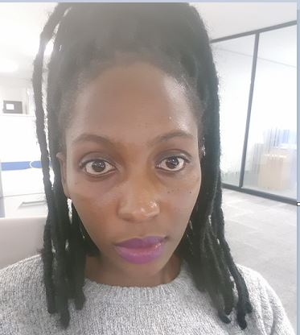

My name is Lekhooa Maeti I am 20 years old I live at Mt.Moorosi. I was born and raised in Lesotho. I am quiet an shy.I am smart and quiet an introvet.I love cooking and cleaning.I am friendly and I love people.I love fruits and I like staying healthy, so I work out. I love ICT hence I applied to be part of the girl's coding camp.
My name is Kobasiea Tjabaka. I am a 16 year old girl ,I live at Sekamaneng.
I am a short , dark ,talkative girl , also bubbly too and super friendly.
The most thing a love doing at my spare time is using my laptop and get to discover new things i dont know but most of them all is reading books.
My name is Liile Morojele,I am a Mostho girl aged 18. I live at Khubetsoana Bochabebela3.I am doing my final year at New Millennium High School,i study eight subjects one of them being Information and Technology(ICT)
.Therefore, I've been urged to go deep into the technical world. I am friendly,straight frorward and a hard wroker,I am a hardworker and I can easily adjust to a new environment. Above all, I personally love interacting with people and making new friends. The girl's coding camp hosted by Vodacom Lesotho and Basali Tech has offered me the platform to do that;interact with new people and make new friends.
My name is Reitumetse MotiaI am 17 years old.I live at Tshenola in Maseru.I attend school at New Millennium High School.My favourite subject is Eglish,I want to be Lesotho's future advocate.One of my dream cars is porsche.I am a very friendly person,ever smiling and calm.Influencing others positive is my motor.I enjoy everybodys company.
In this three day camp at the Vodacom Innovation park we got to learn a lot of interesting things. The camp has offerd ladies the platform to create their own websites and work together towards achieving such.In our website programming we got to use HTML,CSS and Bootstrap. From this we learnt a lot.At this camp we learnt that women are very powerful creatures and through working together we can reach greater heights.We've also learnt how to create a working circut.Also we wrote a few quizes.
We'd like to give thanks to Vodacom and Basali Tech.
Special thanks to 'M'e Setsoto Hlohlomi and her team
.
